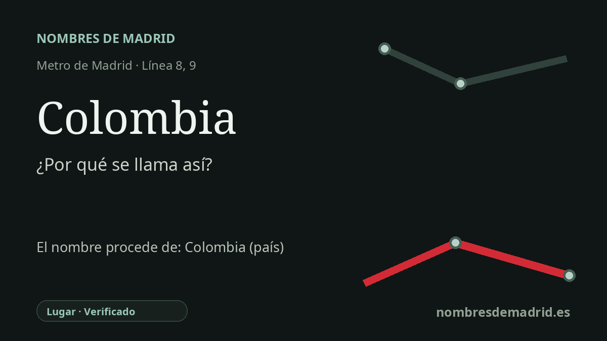

Publicado el · Investigación de Nombres de Madrid · Cómo verificamos cada origen · 7 fuentes consultadas
Respuesta rápida
La estación de Colombia toma su nombre de la calle de Colombia, en el área de Hispanoamérica de Chamartín, dentro de un conjunto de vías madrileñas dedicadas a países y lugares hispanoamericanos. Se abrió en la línea 9b en 1983 y se convirtió en transbordo con la línea 8 en 2002.
La historia del nombre
La estación de Colombia toma su nombre de su entorno inmediato en el callejero. El Consorcio Regional de Transportes sitúa la estación en Príncipe de Vergara, con accesos junto a la plaza de la República Dominicana y la calle de Colombia, y el Callejero Oficial del Ayuntamiento de Madrid recoge la calle de Colombia en el distrito de Chamartín. La lectura más directa es, por tanto, primero la calle y después el país: el nombre del metro refleja la calle de Colombia, cuyo referente es la República de Colombia.
Esa calle se inserta en uno de los conjuntos de nombres hispanoamericanos más claros de Madrid. En el barrio de Hispanoamérica y su entorno aparecen en el mapa nombres como Chile, Puerto Rico, Nicaragua, Costa Rica, República Dominicana, Ecuador, Lima, Cuzco, La Habana y Colombia. El patrón no es casual en la lectura urbana cotidiana: esta zona de Chamartín convierte el mapa de la América de habla española en una geografía local de calles y plazas.
La cronología del transporte es más precisa que el resumen habitual. Colombia no se inauguró en 1982. Se abrió el 30 de diciembre de 1983 en el tramo de la línea 9b entre Plaza de Castilla y Avenida de América, junto a estaciones como Duque de Pastrana, Pío XII, Concha Espina y Cruz del Rayo. En 1986 aquel tramo norte quedó integrado en la línea 9.
La conexión con la línea 8 llegó después y cambió la importancia de la estación. El 21 de mayo de 2002, Metro inauguró el tramo Nuevos Ministerios-Mar de Cristal de la línea 8 y remodeló Colombia dentro de la conexión aeroportuaria por el norte de Madrid. Desde entonces, Colombia funciona a la vez como estación de barrio y como transbordo estratégico entre las líneas 8 y 9.
La etimología es muy segura, aunque no consta en las fuentes disponibles el acuerdo municipal exacto que asignó el nombre a la calle. Lo bien sustentado es la cadena del nombre: la estación está junto a la calle de Colombia; la vía pertenece a un entorno de denominaciones conmemorativas hispanoamericanas; y Colombia es la república sudamericana cuyo nombre aparece en esa calle.